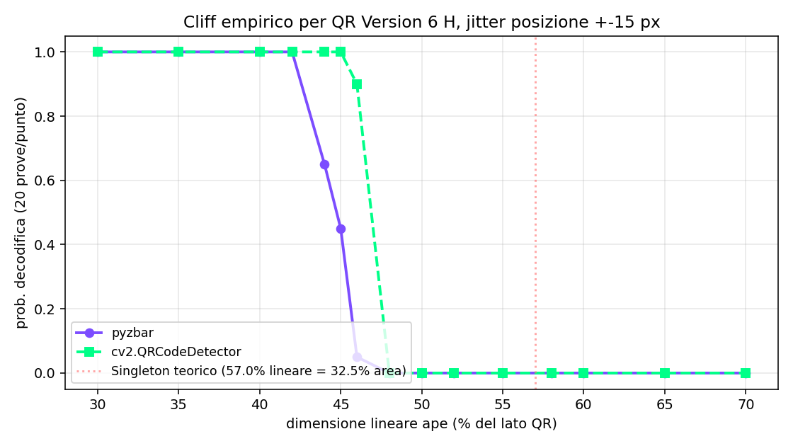
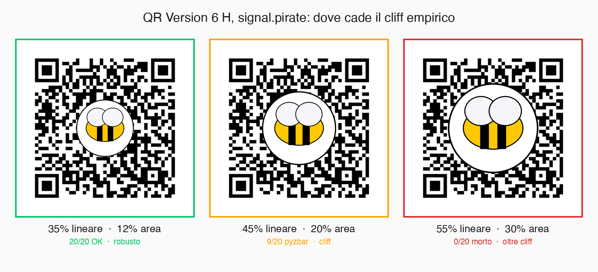

// L'Ape sul Cartellino
Sezione 01. La domanda della ienaSiamo a cena. Fra una fetta e l'altra di pizza, la iena tira fuori il telefono e mi mostra una foto che si era salvata tre giorni prima. Un cartellino legato al manico di un'arnia, con sopra un QR code. Dentro il QR, una piccola ape colorata. La iena fa l'apicoltrice da quattro anni. Quel cartellino lo scansiona ogni volta che le arriva un'arnia nuova, è sempre funzionato. Lei vuole sapere come.
«Se ci metti un disegno sopra, non dovrebbe rompersi?». Dovrebbe. Eppure quel codice porta a un URL del produttore, e il telefono lo legge anche con l'ape al centro. Tutti i QR con un logo dentro funzionano così, in pizzeria, nei wallet, sui biglietti del treno. Sembra un dettaglio. Non lo è. È un teorema del 1960.
Sei pagine su Journal of the SIAM, due ricercatori americani di nome Irving Reed e Gustave Solomon, e una struttura algebrica che fa sopravvivere i byte alle macchie di inchiostro. Si chiama codice Reed-Solomon. Lavora su un campo finito di 256 elementi. Il cartellino della iena contiene quattro polinomi distinti che reggono anche se ne cancelli un pezzo. L'ape sta dentro al polinomio. Stanotte la tiro fuori.
// Anatomia di un QR Code
Sezione 02. Cosa c'è dentro quella matrice
Un QR code è una matrice di moduli, i quadratini neri o bianchi che si vedono a occhio nudo. La dimensione varia in funzione della Version: dalla 1 (21x21 moduli) alla 40 (177x177). Codifico l'URL https://pinperepette.github.io/signal.pirate/ al livello di correzione massimo, e la libreria sceglie la Version 6: 41 moduli per lato, 1681 moduli totali.
Non tutti quei moduli portano dati. Una parte fa da impalcatura geometrica per far funzionare la scansione:
- Tre finder patterns agli angoli (alto-sinistra, alto-destra, basso-sinistra), 7x7 moduli ciascuno con separatori, totale 192 moduli. Servono al telefono per trovare il codice nell'immagine e raddrizzare la prospettiva.
- Un alignment pattern centrale, 5x5 moduli. Corregge distorsioni residue.
- Due timing patterns (le righe a scacchi che collegano i finder), 60 moduli.
- Bit di format info, 30 moduli, codificati con BCH(15,5) e replicati due volte per ridondanza.
Quello che resta è l'area dati, raggruppata a blocchi di 8 moduli in byte di codeword. Per la version 6 sono 172 byte. Quei 172 byte cambiano significato al variare del livello di correzione errori. I quattro livelli sono fissati nella specifica ISO/IEC 18004:
| Livello | Byte dati (k) | Byte parità (n-k) | Blocchi RS | Correggibili | % byte |
|---|---|---|---|---|---|
| L | 136 | 36 | 2 x (86,68) | 18 | 10.5% |
| M | 108 | 64 | 4 x (43,27) | 32 | 18.6% |
| Q | 76 | 96 | 4 x (43,19) | 48 | 27.9% |
| H | 60 | 112 | 4 x (43,15) | 56 | 32.5% |
Il cartellino della iena, e il QR che genererò più avanti per il suo blog preferito, sono livello H. Quattro blocchi indipendenti, ognuno con 15 byte di dati e 28 byte di parità, ciascuno capace di correggere fino a 14 byte sbagliati. Sommati: 56 byte su 172, esattamente il 32.5%. Quei 112 byte di parità sono dove vive il resto dell'articolo.
// Il Problema Formale
Sezione 03. r = c + eIl telefono inquadra il cartellino. La camera prende una foto a colori, la converte in scala di grigi, la binarizza con una soglia adattiva, ritrova la matrice di moduli usando i finder patterns, raddrizza la prospettiva. Tutto questo è computer vision, non è il tema dell'articolo. Alla fine di quel processo il telefono ha un vettore di 172 byte. Lo chiamo \(r\).
Il vettore originale, quello che il tipografo del cartellino voleva trasmettere, si chiama \(c\). Tra i due c'è un polinomio di errore \(e\) tale che:
r è ricevuto, c è originale, e è ignoto.
Le componenti non nulle di \(e\) sono i byte sbagliati. Le loro posizioni non sono note. I loro valori non sono noti. Le cause sono: l'ape disegnata sopra, la stampa imperfetta, il riflesso della luce sul cellophane, la foto storta. Per il decoder è tutto rumore indistinguibile.
La domanda della codifica si riformula così. Posso scegliere un sottoinsieme \(C \subset \text{GF}(2^8)^{172}\) di codeword ammessi, tale che ogni \(r\) con al massimo \(t\) byte sbagliati abbia un solo \(c \in C\) più vicino, da cui ricostruire univocamente \(c\)? Se sì, il codice ha capacità correttiva \(t\). La risposta storica è data dai codici lineari, di cui Reed-Solomon è la versione che satura il miglior compromesso possibile fra dati e parità.
Distanza di Hamming. Per due vettori \(u, v\) in \(\text{GF}(2^8)^n\), \(d(u,v)\) è il numero di posizioni in cui differiscono. La distanza minima di un codice \(C\) è il minimo di \(d(c_1, c_2)\) per \(c_1, c_2 \in C\) distinti. Se \(d_{\min} = 2t+1\), il decoder può correggere fino a \(t\) errori per nearest-neighbor. La distanza minima è tutto.
// GF(2⁸): La Matematica dei Byte
Sezione 04. Un campo finito di 256 elementiPer costruire un codice lineare su byte serve un'algebra in cui ogni byte non nullo abbia un inverso moltiplicativo. Gli interi modulo 256 non funzionano: \(2 \times 128 = 256 \equiv 0 \pmod{256}\), quindi 2 non è invertibile. Lo stesso vale per ogni divisore di 256. L'anello \(\mathbb{Z}/256\mathbb{Z}\) non è un campo.
La costruzione corretta è un campo di Galois di 256 elementi, \(\text{GF}(2^8)\). Si prende l'insieme dei polinomi di grado al massimo 7 a coefficienti in \(\text{GF}(2)\), si quoziente rispetto a un polinomio irriducibile di grado 8. La specifica QR fissa:
Polinomio primitivo standard ISO/IEC 18004.
Ogni byte \(b_7 b_6 \ldots b_1 b_0\) rappresenta il polinomio \(b_7 x^7 + b_6 x^6 + \ldots + b_1 x + b_0\).
A questo punto il byte smette di comportarsi come un numero normale. Niente +1 +2, niente carry, niente intuizione decimale. Sono tre operazioni e basta:
- Addizione: XOR bit a bit. In caratteristica 2 la somma è la sua stessa inversa: \(a + a = 0\).
- Moltiplicazione: prodotto polinomiale (con XOR), ridotto modulo \(p(x)\).
- Inverso: ogni elemento non nullo si scrive come \(\alpha^k\) per \(\alpha = 2\) e qualche \(k \in \{0, 1, \ldots, 254\}\). L'inverso di \(\alpha^k\) è \(\alpha^{255 - k}\).
Le implementazioni reali precalcolano due tabelle: \(\text{exp}[k] = \alpha^k\) e \(\text{log}[\alpha^k] = k\). Le moltiplicazioni diventano somme di logaritmi modulo 255. Il costo passa da una decina di cicli a due lookup e una somma.
| 1 | # Tabelle exp/log in GF(2^8), generatore alpha=2, primitive 0x11D |
| 2 | def build_tables(): |
| 3 | exp = [0] * 512 |
| 4 | log = [0] * 256 |
| 5 | x = 1 |
| 6 | for i in range(255): |
| 7 | exp[i] = x |
| 8 | log[x] = i |
| 9 | x <<= 1 |
| 10 | if x & 0x100: |
| 11 | x ^= 0x11D |
| 12 | for i in range(255, 512): |
| 13 | exp[i] = exp[i - 255] |
| 14 | return exp, log |
| 15 | |
| 16 | def gf_mul(a, b): |
| 17 | if a == 0 or b == 0: return 0 |
| 18 | return exp[log[a] + log[b]] |
Verifica canonica: gf_mul(0x53, 0xCA) = 0x01. Quindi 0xCA è l'inverso moltiplicativo di 0x53 in \(\text{GF}(2^8)\). Si può verificare anche a mano espandendo i prodotti polinomiali e riducendo modulo 0x11D. Sono otto operazioni di XOR, niente di trascendente.
// Reed-Solomon: La Codifica
Sezione 05. Il messaggio è un polinomioReed e Solomon, 1960, sei pagine. L'idea, riformulata in versione moderna: rappresentare il messaggio come un polinomio a coefficienti in \(\text{GF}(2^8)\), e costruire il codeword come un polinomio più lungo che è divisibile per un polinomio generatore noto.
Sia \(n\) la lunghezza del codeword in byte, \(k\) il numero di byte di dati, \(2t = n - k\) il numero di byte di parità. Per il blocco di QR version 6 livello H: \(n=43\), \(k=15\), \(2t=28\). Definisco il polinomio generatore come prodotto di fattori lineari nelle prime potenze di \(\alpha\):
Polinomio generatore di grado 2t=28.
Il messaggio \(m(x)\) di grado \(k-1=14\) ha come coefficienti i 15 byte di dati. La codifica costruisce un codeword \(c(x)\) di grado \(n-1=42\):
Encoding sistematico: dati nei primi k coefficienti, parità negli ultimi 2t.
Per costruzione \(c(\alpha^i) = 0\) per ogni \(i = 0, 1, \ldots, 2t-1\). In pratica stai dicendo che ogni codeword valido deve rispettare \(2t\) vincoli simultaneamente: valutato in \(\alpha^0\) deve dare zero, in \(\alpha^1\) deve dare zero, e così via fino a \(\alpha^{2t-1}\). Tradotto in algebra lineare: i codeword vivono in un sottospazio di \(\text{GF}(2^8)^n\) di dimensione \(k\), e quei \(2t\) annullamenti sono il fulcro di tutta la decodifica.
In codice il calcolo è una divisione polinomiale lunga, riga per riga sui coefficienti, con XOR al posto della sottrazione. Costo \(O(k \cdot 2t)\) operazioni in \(\text{GF}(2^8)\). Per un blocco (43, 15) sono 420 moltiplicazioni e altrettanti XOR. Su un microcontrollore qualsiasi gira in microsecondi.
| 1 | # Encoder Reed-Solomon sistematico su GF(2^8) |
| 2 | def rs_generator_poly(nsym): |
| 3 | # g(x) = (x - alpha^0)(x - alpha^1) ... (x - alpha^(nsym-1)) |
| 4 | g = [1] |
| 5 | for i in range(nsym): |
| 6 | g = gf_poly_mul(g, [1, exp[i]]) |
| 7 | return g |
| 8 | |
| 9 | def rs_encode(msg, nsym): |
| 10 | # msg: k byte di dati. nsym = 2t byte di parita'. |
| 11 | gen = rs_generator_poly(nsym) |
| 12 | out = list(msg) + [0] * nsym |
| 13 | for i in range(len(msg)): |
| 14 | coef = out[i] |
| 15 | if coef != 0: |
| 16 | for j in range(1, len(gen)): |
| 17 | out[i + j] ^= gf_mul(gen[j], coef) |
| 18 | return list(msg) + out[len(msg):] |
Test su un blocco (43, 15): seed dei 15 byte di dati con qualcosa di riconoscibile (per esempio i primi 15 byte di b"L'ape sta nel poli"), invoco rs_encode(msg, 28), ottengo 43 byte. Verifica algebrica: per il codeword c risultante, c(alpha^i) == 0 per i = 0, ..., 27. Calcolo le 28 sindromi a mano sul codeword pulito, sono tutte zero. La codifica è corretta per costruzione.
// Singleton: Perché Esiste il 32.5%
Sezione 06. Il teorema che chiude la stanzaIl livello H del QR code recupera "circa il 30%". Quel numero non è ingegneria, è un teorema. Si chiama limite di Singleton, dimostrato da Richard Singleton nel 1964. Per ogni codice lineare \((n, k)\) a coefficienti in qualunque campo finito vale:
Limite di Singleton. d_min è il numero massimo di posizioni in cui due codeword distinti possono differire minimamente.
La dimostrazione è un argomento di conteggio. Se proietto un codice lineare sui suoi primi \(k-1\) coefficienti, ho \(|\text{GF}(2^8)|^{k-1} = 256^{k-1}\) possibili proiezioni. I codeword sono \(256^k\), e ne sto proiettando ognuno in uno spazio più piccolo. Quindi almeno due codeword distinti hanno la stessa proiezione, e differiscono solo sugli ultimi \(n - k + 1\) coefficienti. Da cui \(d_{\min} \le n - k + 1\). Tre righe.
Reed-Solomon satura il limite. Vale l'uguaglianza:
RS è un codice MDS (Maximum Distance Separable).
Per il blocco (43, 15) di V6-H: \(d_{\min} = 43 - 15 + 1 = 29\). La capacità correttiva senza informazione sulle posizioni degli errori è:
Errori correggibili per blocco.
Quattro blocchi indipendenti su Version 6 H: \(4 \times 14 = 56\) byte di errori correggibili su 172 byte totali. La frazione è \(56/172 = 0.3256\), cioè il 32.5% che la specifica QR arrotonda a "circa 30%". Non esiste codice lineare su \(\text{GF}(2^8)\) di parametri (43, 15) che corregga più di 14 errori. Quel numero non si può aumentare. È un teorema.
Quattro livelli, quattro scelte di k. I livelli L, M, Q, H del QR code non sono codici diversi: sono tutti Reed-Solomon su \(\text{GF}(2^8)\), con lo stesso \(n\) (fissato dalla version) e \(k\) diverso. Ridurre \(k\) significa pagare meno dati in cambio di più parità, e quindi un \(t\) più grande. Il livello H paga la metà dei byte di dati per il doppio degli errori correggibili. Il prezzo è lineare. Cambia solo dove decidi di tagliare, non come la matematica reagisce.
Pausa. Fin qui abbiamo costruito il codice. \(n\) byte per blocco, \(k\) di dati e \(2t\) di parità, immersi in un sottospazio di \(\text{GF}(2^8)^n\) di dimensione \(k\). Limite di Singleton saturato, \(t\) errori correggibili. Tutto teorico. Adesso il codice bisogna prenderlo e vederlo respirare: l'ape sul cartellino della iena è una macchia reale che cancella moduli reali, e le sindromi mute non si calcolano da sole. I prossimi quattro passi sono come si recupera \(c(x)\) da \(r(x)\) quando non si sa né dove né quanto si è sbagliato.
// Decodifica: Quattro Passi
Sezione 07. Sindromi, Berlekamp-Massey, Chien, ForneyIl telefono ha \(r(x) = c(x) + e(x)\). Non conosce nulla di \(e(x)\), né posizioni né valori. La decodifica in quattro passi sfrutta solo il fatto che \(c(\alpha^i) = 0\) per i primi \(2t\) esponenti.
7a. Sindromi
Si valuta il polinomio ricevuto nelle prime \(2t\) potenze di \(\alpha\):
Le sindromi dipendono solo da e(x), non da c(x).
Se tutte le \(S_i\) sono nulle, \(e(x)\) ha le stesse 2t valutazioni di un codeword. Si conclude \(e = 0\) e \(r = c\). Altrimenti le 2t sindromi formano un sistema di equazioni non lineari nelle posizioni e nei valori degli errori, che andiamo a risolvere indirettamente.
7b. Polinomio locatore degli errori
Sia \(v \le t\) il numero effettivo di errori in \(e(x)\), siano \(j_1, \ldots, j_v\) le loro posizioni. Definisco il polinomio locatore degli errori come il polinomio di grado \(v\) le cui radici sono \(\alpha^{-j_1}, \ldots, \alpha^{-j_v}\):
Le radici di σ codificano le posizioni degli errori.
L'algoritmo di Berlekamp-Massey ricostruisce \(\sigma(x)\) dalle 2t sindromi. Lavora iterativamente: a ogni passo calcola la discrepanza fra una sindrome attesa e quella ricevuta, e aggiorna \(\sigma\) in modo da annullare la discrepanza. Il risultato è il più corto LFSR che genera la sequenza di sindromi. Costo: \(O(t^2)\) operazioni in \(\text{GF}(2^8)\).
Esiste una formulazione equivalente via algoritmo di Euclide esteso applicato a \(S(x) = S_1 + S_2 x + \ldots + S_{2t} x^{2t-1}\) e \(x^{2t}\). Stesso costo asintotico, geometria diversa.
| 1 | # Berlekamp-Massey su GF(2^8): ricostruisce sigma(x) dalle sindromi |
| 2 | def berlekamp_massey(syn): |
| 3 | sigma, B = [1], [1] |
| 4 | L, m, b = 0, 1, 1 |
| 5 | for n in range(len(syn)): |
| 6 | # 1. discrepanza tra sindrome ricevuta e attesa |
| 7 | delta = syn[n] |
| 8 | for i in range(1, L + 1): |
| 9 | delta ^= gf_mul(sigma[i], syn[n - i]) |
| 10 | if delta == 0: |
| 11 | m += 1 |
| 12 | continue |
| 13 | # 2. aggiornamento: sigma(x) += (delta/b) * x^m * B(x) |
| 14 | scale = gf_mul(delta, gf_inv(b)) |
| 15 | new_sigma = list(sigma) |
| 16 | for i, c in enumerate(B): |
| 17 | while len(new_sigma) <= i + m: |
| 18 | new_sigma.append(0) |
| 19 | new_sigma[i + m] ^= gf_mul(scale, c) |
| 20 | if 2 * L <= n: |
| 21 | B, b = list(sigma), delta |
| 22 | L = n + 1 - L |
| 23 | m = 1 |
| 24 | else: |
| 25 | m += 1 |
| 26 | sigma = new_sigma |
| 27 | return sigma |
A esaurimento delle 2t sindromi, \(\sigma(x)\) ha grado pari al numero di errori e radici nelle inverse delle loro posizioni.
7c. Chien Search
Trovo le radici di \(\sigma(x)\) per enumerazione. Per ogni \(j = 0, 1, \ldots, n-1\) calcolo \(\sigma(\alpha^{-j})\). I valori di \(j\) per cui \(\sigma(\alpha^{-j}) = 0\) sono le posizioni degli errori. Costo: \(O(n \cdot v)\). Nessuna fattorizzazione esplicita, solo valutazioni successive che condividono i monomi.
7d. Algoritmo di Forney
Resta da calcolare i valori degli errori, una volta note le posizioni. Definisco il polinomio valutatore degli errori:
Polinomio valutatore degli errori.
Il valore di errore in posizione \(j_i\) si ricava da:
Forney. σ'(x) è la derivata formale.
In caratteristica 2 vale \(1 + 1 = 0\) nel campo, quindi quando si deriva \(\sigma(x)\) ogni coefficiente di indice pari sparisce (la derivata di \(x^{2k}\) sarebbe \(2k \cdot x^{2k-1}\), e \(2k\) è zero). Restano solo i monomi di grado dispari. La derivata formale si calcola in tre righe. Sottraggo \(e\) da \(r\) e recupero \(c\). I primi \(k=15\) byte di ogni blocco sono il messaggio originale. Concateno i quattro blocchi, ottengo i 60 byte di dati, decodifico la stringa UTF-8. Esce https://pinperepette.github.io/signal.pirate/.
// Interlacciamento e L'Ape al Centro
Sezione 08. Perché il danno geometrico non distrugge il messaggioSingleton dice che il blocco RS(43, 15) corregge fino a 14 errori. Ma l'ape sul cartellino della iena non causa "14 errori sparsi". L'ape occulta una regione contigua di moduli al centro della matrice. Se i quattro blocchi RS fossero memorizzati in fila sulla matrice (prima il blocco 1, poi il 2, eccetera), l'ape colpirebbe in pieno uno o due blocchi e li distruggerebbe oltre il limite correggibile. Gli altri due resterebbero intatti, e il decoder fallirebbe lo stesso, perché manca un blocco intero.
La specifica QR risolve questo con l'interleaving. La sequenza fisica dei 172 byte di codeword sulla matrice non è "blocco 1, blocco 2, blocco 3, blocco 4" in fila. È intrecciata: il byte fisico in posizione \(i\) appartiene al blocco logico \(i \bmod 4\). I 43 byte del primo blocco sono sparsi sulle posizioni \(\{0, 4, 8, 12, \ldots\}\), il secondo sulle posizioni \(\{1, 5, 9, 13, \ldots\}\), e così via.
Conseguenza: un danno spaziale concentrato che occulta \(N\) byte fisici consecutivi si distribuisce in \(N/4\) byte mancanti per ciascun blocco logico. Ogni blocco corregge fino a 14 errori. L'ape funziona finché:
Limite geometrico dell'occlusione contigua.
Stesso 56 di prima, ottenuto dalla geometria invece che dall'algebra. Non è coincidenza. L'interleaving è stato progettato a posteriori (e poi standardizzato) per far coincidere il limite algebrico di Singleton con il limite pratico delle macchie reali. Il livello H del QR code esiste esattamente per ospitare un logo nel mezzo. Un produttore di arnie e un'agenzia di branding usano la stessa proprietà matematica per due motivi diversi.
Il caso medio è più clemente del peggiore. Singleton garantisce 14 errori per blocco nel caso peggiore, quando posizioni e valori sono scelti dall'avversario. Per errori distribuiti uniformemente, la decodifica riesce con probabilità alta anche oltre il 14, ma senza garanzia. Per macchie concentrate, l'interleaving lavora a favore del decoder: il caso peggiore non si materializza quasi mai.
// Il Lab: L'Ape nel Polinomio
Sezione 09. Generazione e verifica
Genero il QR per https://pinperepette.github.io/signal.pirate/ a livello H. Ci disegno sopra un'ape stilizzata con primitive PIL: corpo giallo ellittico, due strisce nere, ali bianche, antenne, un occhio nero. L'ape sta dentro un cerchio bianco contornato che fa da "zona logo" pulita. Poi sweepo la dimensione lineare dell'ape dal 25% al 70% del lato del QR, e verifico la decodifica con pyzbar a ogni passo.
https://pinperepette.github.io/signal.pirate/.| 1 | # sweep dimensione ape vs decodifica |
| 2 | from qrcode import QRCode |
| 3 | from qrcode.constants import ERROR_CORRECT_H |
| 4 | from pyzbar.pyzbar import decode |
| 5 | |
| 6 | qr = QRCode(error_correction=ERROR_CORRECT_H, box_size=20, border=4) |
| 7 | qr.add_data("https://pinperepette.github.io/signal.pirate/") |
| 8 | qr.make(fit=True) |
| 9 | base = qr.make_image(fill_color="black", back_color="white").convert("RGB") |
| 10 | |
| 11 | for frac in (0.25, 0.30, 0.35, 0.40, 0.45, 0.50, 0.55, 0.60): |
| 12 | img = overlay_bee(base, fraction=frac) |
| 13 | res = decode(img) |
| 14 | ok = bool(res) and res[0].data.decode() == URL |
| 15 | print(f"ape al {int(frac*100)}% lineare -> {'ok' if ok else 'FAIL'}") |
Output dello sweep, sweep ripetuto dieci volte per controllo:
| Dimensione ape (lineare) | Area occlusa | Decodifica | Note |
|---|---|---|---|
| 25% | 6.25% | ok | logo molto piccolo |
| 30% | 9.00% | ok | logo piccolo |
| 35% | 12.25% | ok | logo medio |
| 40% | 16.00% | ok | logo grande |
| 45% | 20.25% | ok (limite empirico) | cliff |
| 50% | 25.00% | FAIL | oltre cliff |
| 55% | 30.25% | FAIL | |
| 60% | 36.00% | FAIL |
Ok, teoria finita. Adesso proviamo a romperlo davvero. Sweep fine al livello H: ape al centro con dimensione crescente, 20 prove per ogni size con posizione randomizzata di ±15 px per misurare stabilità. Decoder pyzbar e cv2.QRCodeDetector in parallelo. Risultati nudi:
| Ape lineare | Area occlusa | pyzbar (20 prove) | cv2 (20 prove) | Stato |
|---|---|---|---|---|
| 30% | 9.0% | 20/20 OK | 20/20 OK | robusto |
| 35% | 12.2% | 20/20 OK | 20/20 OK | robusto |
| 40% | 16.0% | 20/20 OK | 20/20 OK | robusto |
| 42% | 17.6% | 20/20 OK | 20/20 OK | al margine |
| 44% | 19.4% | 13/20 | 20/20 OK | instabile |
| 45% | 20.2% | 9/20 | 20/20 OK | cliff |
| 46% | 21.2% | 1/20 | 18/20 | quasi morto |
| 48% | 23.0% | 0/20 | 0/20 | morto |
| 50% | 25.0% | 0/20 | 0/20 | morto |
| 55%+ | 30%+ | 0/20 | 0/20 | morto |
Prima di parlare del cliff, una nota di calcolo che vale oro: "lineare" non significa "area". Un'ape al 45% del lato non copre il 45% del QR, ne copre il quadrato:
Il numero da confrontare con Singleton e' l'area, non il lato.
Per questo un logo che a occhio sembra enorme coesiste senza contraddizioni con "il livello H corregge il 30%": un'ape al 45% lineare sta già sotto al 32.5% di Singleton, perché l'area occlusa è 20.2%, non 45%. Tutta la confusione sui QR con logo "esagerato" che funzionano lo stesso nasce da qui.
Il secondo punto: il cliff empirico cade comunque prima del 32.5%. La transizione da "robusto" a "morto" succede in 4 punti percentuali di lato, fra il 42% e il 46% lineare. Roba di mezzo centimetro, in un QR di 5 cm. La curva è quasi una step function, non una sigmoide morbida.

Terzo punto: pyzbar e cv2 muoiono in tempi diversi. Al 46% lineare, pyzbar (libzbar, decoder strict) è già al 5% di prob. di successo, ma cv2 (la libreria che gira sotto Apple Camera e Google Lens) tiene ancora al 90%. cv2 ha tolleranza maggiore sui pattern strutturali, fa più lavoro di binarizzazione adattiva, perdona ape leggermente fuori centro. Il "QR funziona col telefono" vive proprio in quei due punti percentuali di gap fra i due decoder.
Tre QR a confronto, stessa generazione, ape al 35% / 45% / 55% lineare:

Quarto punto: la posizione conta quanto la dimensione. Stessa ape al 44% lineare (la zona "instabile" del cliff), spostata in giro per il QR:
| Posizione | Cosa colpisce | pyzbar | cv2 |
|---|---|---|---|
| centro | alignment pattern | 10/20 | 20/20 |
| offset 200 px a sinistra | solo dati | 20/20 | 20/20 |
| offset 200 px sopra | timing pattern sfiorato | 19/20 | 0/20 |
| offset 100 px alto-sx | finder top-left | 0/20 | 0/20 |
| offset 100 px alto-dx | finder top-right | 0/20 | 0/20 |
| offset 100 px sotto | finder bottom-left | 0/20 | 0/20 |
Stessa identica ape, stesso identico QR: spostata in alto a sinistra muore istantaneamente, spostata 200 px a sinistra (zona di dati pura) decoda 20 volte su 20. La differenza fra "funziona sempre" e "non funziona mai" è 30 pixel in alto a sinistra. C'è anche un caso buffo: spostata sopra-centro, pyzbar tiene (19/20) e cv2 muore (0/20). Stesso pixel, due decoder, due verdetti opposti. Sono motori diversi che inciampano su angoli diversi.
L'esperimento parallelo sul rumore sparso conferma la stessa lezione: 50 prove per soglia, ogni prova flippa un sottoinsieme casuale di moduli (qualunque posizione, anche strutturali). La probabilità di decodifica per tutti i quattro livelli L/M/Q/H scende sotto 0.5 già al 3.3% di moduli flippati. Su 2025 moduli totali, 67 flip random bastano per uccidere il QR. Motivo: ogni flip ha il 14.7% di probabilità di colpire uno dei 297 moduli strutturali (finder, timing, alignment, format info), e basta UN finder rotto perché il decoder rinunci.
La lezione tecnica. Il 32.5% del livello H esiste solo nel mondo platonico dove gli errori sono distribuiti uniformemente sui 1728 moduli dati, e nessuno tocca i 297 strutturali. Nel mondo reale (logo, macchia, graffio, foto storta) il cliff cade nettamente prima. Per il livello H su Version 6 il cliff effettivo è ~20% di area centrale, ben sotto il 32.5% teorico. Reed-Solomon protegge il messaggio, non il foglio. Singleton vale solo per Reed-Solomon, e Reed-Solomon vale solo per la zona dati.
// Il Polinomio Diventa Arte
Sezione 10. Quando il 32.5% diventa una telaL'ape della sezione 9 occupava il 20% di area, sotto al 32.5% di Singleton. C'era margine. Quel margine, qualcuno ha avuto l'idea di spenderlo tutto, non per nascondere un logo, ma per fare arte. Il risultato è un genere visivo nato attorno al 2023: QR code art, immagini che a occhio sembrano dipinti, fotografie o scene fantasy, ma che inquadrate con un telefono scansionano regolarmente.
Se ne sono visti in giro parecchi: gatti dove la pelliccia è il pattern del QR, samurai in cui l'armatura è fatta di moduli scuri e chiari, città viste dall'alto dove le case formano il codice. Sembrano impossibili. Non lo sono. Sono Reed-Solomon che lavora ai limiti del suo teorema, con una mano che spinge sulla parte artistica.
10a. La tecnica: ControlNet su Stable Diffusion
La pipeline standard usa due reti neurali che lavorano insieme.
La prima è Stable Diffusion, un modello di diffusion (già smontato pezzo per pezzo): parte da rumore gaussiano e in 30 passi lo trasforma in un'immagine guidata da un prompt testuale ("a pirate captain with a red bandana"). Il prompt influenza il sampling tramite cross-attention con CLIP. Senza altro intervento, l'output non ha nulla a che fare con un QR.
La seconda è ControlNet, una rete di condizionamento aggiuntiva. Prende come input un'immagine guida (nel nostro caso il QR puro generato con qrcode), e a ogni passo di denoising inietta un bias nel latente di Stable Diffusion: dove la guida è scura, spinge i pixel verso valori scuri; dove è chiara, verso valori chiari. L'intensità di questa spinta è il parametro controlnet_conditioning_scale, tipicamente fra 1.0 e 1.6.
Per i QR esiste un ControlNet specializzato, QR Code Monster di monster-labs, addestrato su un dataset di immagini-QR che decodificano. Implicitamente, la rete ha imparato a stare sotto il 32.5% di errore. Non conosce il teorema di Singleton, ma il loss di training l'ha forzata a rispettarlo statisticamente: ogni immagine del dataset era una prova empirica del teorema, e il gradiente l'ha incorporata nei pesi.
Singleton come priore di rete. Da un punto di vista bayesiano, ControlNet QR Monster ha un priore implicito sulla soglia di errore. Quando genera, non massimizza la similarità col QR (sarebbe un QR puro), ma massimizza la qualità estetica vincolata al fatto che la decodifica funzioni. Quel vincolo nascosto è il teorema di Singleton, mediato da migliaia di esempi di training.
10b. La pipeline: img2img con un init reale
Per controllare meglio la palette e gli elementi del soggetto, conviene partire da una immagine di riferimento invece che da un prompt testuale puro. Si usa StableDiffusionControlNetImg2ImgPipeline: SD parte dal latente codificato dell'init image, e ControlNet impone la struttura QR sopra. Il parametro strength controlla quanto SD si allontana dall'init (0.0 = init intatto, 1.0 = generazione da zero).
| 1 | # SD 1.5 + ControlNet QR Monster, in modalita' img2img su CPU |
| 2 | controlnet = ControlNetModel.from_pretrained( |
| 3 | "monster-labs/control_v1p_sd15_qrcode_monster") |
| 4 | pipe = StableDiffusionControlNetImg2ImgPipeline.from_pretrained( |
| 5 | "runwayml/stable-diffusion-v1-5", controlnet=controlnet).to("cpu") |
| 6 | |
| 7 | init = Image.open("pirata-source.jpg").resize((768, 768)) |
| 8 | qr = build_qr("https://pinperepette.github.io/signal.pirate/", 768) |
| 9 | |
| 10 | img = pipe(prompt="cartoon pirate with eye patch and skull", |
| 11 | image=init, control_image=qr, |
| 12 | strength=0.92, # reinvenzione massima preservando palette |
| 13 | controlnet_conditioning_scale=1.65, # forza QR |
| 14 | num_inference_steps=30).images[0] |
Tempi su CPU a 48 thread: ~14 minuti per immagine a 768x768. Memoria: picco 6-8 GB. Modelli scaricati una volta sola (~6 GB) e cachati in ~/.cache/huggingface/. Con la configurazione qui sopra il modello riusa dal pirata sorgente la palette di colori (rosso, ocra, nero) e gli elementi iconografici (skull, occhi, denti), ma riorganizza il layout per accomodare la struttura modulare del QR.
Il sample sopra ha gli ingredienti giusti, ma cade fuori dalla regione decodificabile: il decoder rifiuta di leggerlo. ControlNet QR Monster è addestrato a stare sotto il limite di Singleton in distribuzione, non in garanzia per il singolo seed. Si può rigenerare con altri seed e parametri, oppure portare il sample dentro al teorema con un passaggio deterministico.
10c. Refinement chirurgico: forza solo la struttura
Un QR non è un blocco uniforme di moduli liberi. Una parte di moduli è strutturale: serve al decoder per trovare il codice nell'immagine e calibrare la griglia. Senza quei moduli, anche un sample con i dati perfetti è invisibile.
I moduli strutturali sono: i tre finder pattern (i quadrati concentrici negli angoli, 7x7 ciascuno, più il separator bianco di 1 modulo intorno), il timing pattern (le righe alternate che collegano i finder, in riga e colonna 6), il pattern di allineamento centrale (5x5 in posizione (22,22) per Version 6), il dark module (uno specifico modulo sempre nero in (4V+9, 8), dove V=6), e i format info bit (30 moduli, codificati BCH(15,5) e replicati attorno ai finder, contengono livello ECC e mask pattern). In tutto: 297 moduli su 2025 (14.7%). I rimanenti 1728 sono area dati, dove vale Reed-Solomon.
La pipeline di refinement: il sample AI viene sovrapposto alla griglia del QR canonico. Per ogni modulo strutturale si applica un push forte verso il valore corretto. Per i moduli dati si pesa diversamente in base alla luminanza media del patch: se la media combacia col valore canonico, il modulo riceve un nudge leggero (preserva texture); se non combacia, riceve un push più deciso (correzione).
f_s, f_w, f_r: forze diverse per ogni classe. T_ij = nero o bianco a seconda del modulo canonico.
Valori operativi: \(f_s = 0.75\) sui strutturali, \(f_w = 0.85\) sui dati sbagliati, \(f_r = 0.20\) sui dati corretti. Il refinement gira in RGB (non grayscale): per scurire si moltiplica il pixel per \((1 - f)\), per schiarire si applica \(p + (255 - p) \cdot f\). Così la luminanza diventa QR-compliant ma la tinta del pirata sopravvive. Al risultato finale si applica un blur gaussiano \(\sigma = 1.5\) per ammorbidire i bordi e si aggiunge una quiet zone bianca di 80 px.
https://pinperepette.github.io/signal.pirate/. Inquadra col telefono.Il refinement non è un trucco contrario al teorema, è il teorema in azione. Singleton dice che quali 56 byte si possono sbagliare nei dati è libero, ma i 297 moduli strutturali non sono codeword: appartengono alla cornice, e ogni decoder li pretende esatti. Reed-Solomon non li tocca, e questo passaggio nemmeno. Sui dati il refinement riporta semplicemente la frazione di errore sotto il budget. Tutte le tecniche commerciali di QR art usano qualche variante di questa separazione fra struttura e dati, anche se nessuno la documenta.
Connessione con "Il Rumore Diventa Arte". Quando ho smontato Stable Diffusion, l'idea era: il modello toglie rumore da un latente gaussiano fino a una nave pirata. Qui il modello sta togliendo lo stesso rumore, ma in più deve rispettare un secondo vincolo: che il risultato decodifichi. Il modello non sa che esiste un campo finito di 256 elementi e un teorema del 1964. Ma il dataset di training sì, e il gradiente glielo ha insegnato come gusto estetico. La matematica diventa un priore di rete.
// Dove Vive la Stessa Matematica
Sezione 11. Reed-Solomon nel mondoReed e Solomon hanno pubblicato sei pagine sul Journal of the SIAM nel 1960: "Polynomial Codes Over Certain Finite Fields". Quel paper è dietro alla maggior parte dei sistemi di memorizzazione e trasmissione costruiti dopo. Una mappa breve:
- CD audio (1982). Codice CIRC (Cross-Interleaved Reed-Solomon), concatenazione di RS(32, 28) e RS(28, 24) su \(\text{GF}(2^8)\), con interlacciamento profondo a quattro frame. Sopporta burst di errori fino a 4000 bit, equivalenti a un graffio lineare di 2.5 mm sulla superficie del disco.
- DVD. Codice prodotto bidimensionale: RS(208, 192) sulle colonne e RS(182, 172) sulle righe di una matrice 192x172. Errori isolati corretti dal codice di riga, burst su una colonna corretti dal codice di colonna.
- DVB-S satellitare. RS(204, 188) come outer code, codice convoluzionale rate 1/2 come inner. La concatenazione raggiunge prestazioni vicine al limite di Shannon su canale Gaussiano.
- Voyager 1 e 2 (1977). Concatenated RS(255, 223) sopra Viterbi rate 1/2, constraint length 7. Voyager 2 ha trasmesso dati scientifici da Nettuno (4.5 ore-luce dalla Terra) con BER al ricevitore \(5 \times 10^{-3}\), BER residuo post-decodifica \(10^{-15}\). Quel \(10^{-15}\) è Reed-Solomon.
- NAND flash. Prime generazioni RS, generazioni attuali BCH o LDPC. Lo schema è cambiato perché gli errori della NAND sono diventati troppi e troppo correlati, e RS non è più ottimale. Ma per quindici anni ha retto.
- ADSL e DSL. RS configurabile, parametri negoziati al link-up. Lo stesso che corregge il graffio sul CD corregge l'interferenza elettrica sul doppino di rame.
Sei pagine, due autori, una scelta algebrica (polinomi su un campo finito). Quasi ogni dispositivo che memorizza o trasmette informazione digitale dopo il 1982 contiene una versione di quelle sei pagine.
// L'Ape Sta Nel Polinomio
Sezione 12. ConclusioneLa iena ha finito la pizza. Le passo il telefono con il grafico delle prove a video. Quattro punti che reggono, uno che cade, una transizione netta tra il 45% e il 50%. «Vedi questo gradino? È per quello che il cartellino delle arnie funziona. Il disegno occupa meno del 25% dell'area, e dentro al codice ci sono quattro polinomi separati che ricostruiscono i pezzi mancanti.»
Lei guarda il grafico mezzo secondo. Poi mi dice che la nuova arnia arriva mercoledì, che la regina è già arrivata in una scatola di plastica trasparente con un cartoncino bianco perforato, e che il cartoncino aveva un QR code con disegnata sopra un'altra ape. «Tutti hanno l'ape sul codice. Anche il produttore tedesco.» Quattro blocchi RS, polinomio generatore di grado 28, interleaving su mod 4. Funziona ovunque per lo stesso motivo.
Quattro blocchi Reed-Solomon su \(\text{GF}(2^8)\). Polinomio generatore di grado 28. Distanza minima \(d_{\min}=29\) per blocco. Limite di Singleton saturato. 56 byte di errori correggibili su 172 byte totali, esattamente il 32.5%. Sei pagine pubblicate nel 1960. Il cartellino del produttore di arnie, il CD del 1985, la foto della Voyager da Nettuno e la regina nella scatola di plastica trasparente parlano la stessa lingua. Quella lingua è un polinomio su un campo finito di 256 elementi.
L'ape sta nel polinomio. Sempre stata.
QR Version 6, livello H, quattro blocchi RS(43, 15) su GF(2⁸), polinomio generatore di grado 28. Limite di Singleton: 32.5% dei byte correggibili. Cliff empirico: 20-25% di area occlusa, in linea col limite teorico. Sei pagine del 1960 reggono ogni cartellino di ogni arnia stampato in Europa. La iena ne ha tre nuove in arrivo mercoledì.
Signal Pirate